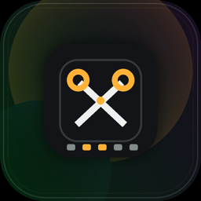
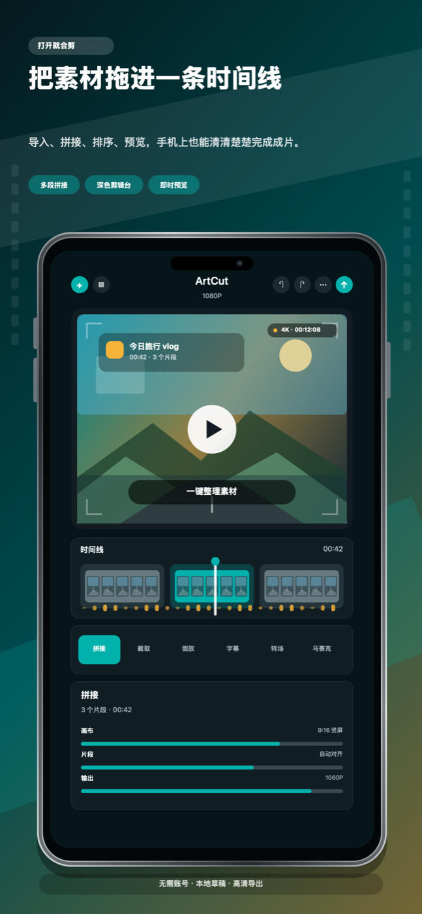
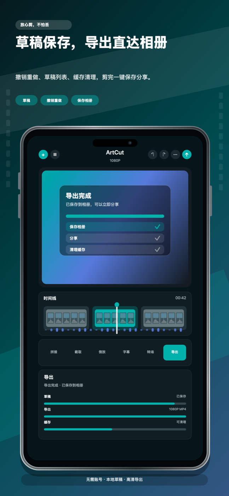

ArtCut / ArtCut Pro
ArtCut и ArtCut Pro — отдельные версии видеоредактора с общими основными функциями. ArtCut бесплатен и содержит рекламу; ArtCut Pro — платная версия без рекламы.

Free с рекламой · Платная версия без рекламы
Импортируйте клипы, собирайте таймлайн, обрезайте, разделяйте, меняйте скорость, делайте реверс, добавляйте переходы, субтитры, наложения, звук и экспортируйте видео.

Склейка клипов, обрезка, разделение, реверс, поворот, отражение, рамки и изменение скорости.
Субтитры, стикеры, обложки, рисунки, мозаика и рамки picture-in-picture.
Бесплатная версия показывает Yandex Mobile Ads через Yandex Mobile Mediation, а Google AdMob настраивается как demand source в панели Yandex. App open, editor banner, native/feed и post-export interstitial placements включены только в free build после определения ATT status. Paid build без рекламы и не инициализирует advertising SDKs.
Информация сайта обновлена 12 сентября 2026 года
ArtCut и ArtCut Pro — отдельные версии видеоредактора с общими основными функциями. ArtCut бесплатен и содержит рекламу; ArtCut Pro — платная версия без рекламы.
Локальная заменяющая сборка исправляет порядок запросов разрешений и согласия, запуск и стабильность экспорта. Ее загрузка и выпуск не подтверждены, поэтому эти исправления не описываются как уже доступные в App Store. Объединение приложений и дата выпуска не объявлены.
Скриншоты показывают монтаж таймлайна, автоматические субтитры и экспорт.

ArtCut не требует учетной записи. Импортированные медиа, черновики, рендеры, извлеченное аудио и кэш по умолчанию хранятся на устройстве. Экспорт и обмен контролирует пользователь.